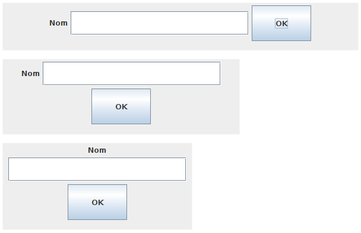
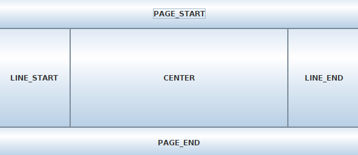
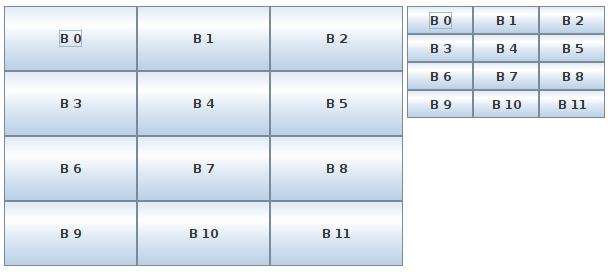

És el layout per defecte dels contenidors (JPanel).
Els components es van afegint un a continuació de l'altre en horitzontal.
Quan un component no hi cap degut a l'amplada del contenidor, es posa a sota.
Per defecte, els components d'una línia queden centrats respecte de la línia i centrats entre ells.
També s'afegeix una separació de 5 píxels entre ells.
Hi ha diferents constructors per poder indicar l'alineació dels components i la separació entre ells.
Les principals formes d'alineació poden ser:
No es pot fixar la posició dels components, però sí la seva mida.
Al redimensionar el contenidor, els components poden canviar de posició, però la mida es manté.
Si un component no hi cap, quedarà retallat.
// Obtenir el panell principal de la finestra (JFrame) i posar FlowLayout
Container panell = finestra.getContentPane();
panell.setLayout(new FlowLayout());
// Crear objectes i afegir-los al contenidor
JLabel lNom = new JLabel("Nom");
panell.add(lNom);
JTextField tfNom = new JTextField();
tfNom.setPreferredSize(new Dimension(300, 40));
panell.add(tfNom);
JButton bOk = new JButton("OK");
bOk.setPreferredSize(new Dimension(100, 60));
panell.add(bOk);

BorderLayout ref. (Java SE 17)
És el layout per defecte de les finestres (JFrame) i diàlegs (JDialog).
Divideix el contenidor en 5 zones i es pot posar un component en cada zona.
Evidentment, cada component pot ser un contenidor (JPanel), i a dins es poden posar altres components.
Les 5 zones s'anomenen:
Per afegir un component, cal indicar en quina zona s'afegirà.
Si en una zona no s'afegeix cap component, aquesta no ocuparà cap espai.
// Obtenir el panell principal de la finestra (JFrame) i posar BorderLayout
Container panell = finestra.getContentPane();
// NO CAL: el panell principal de la finestra ja té BorderLayout per defecte
//panell.setLayout(new BorderLayout());
JButton b = new JButton("PAGE_START");
b.setPreferredSize(new Dimension(120, 50));
panell.add(b, BorderLayout.PAGE_START);
b = new JButton("PAGE_END");
b.setPreferredSize(new Dimension(120, 50));
panell.add(b, BorderLayout.PAGE_END);
b = new JButton("LINE_START");
b.setPreferredSize(new Dimension(120, 50));
panell.add(b, BorderLayout.LINE_START);
b = new JButton("LINE_END");
b.setPreferredSize(new Dimension(120, 50));
panell.add(b, BorderLayout.LINE_END);
b = new JButton("CENTER");
panell.add(b, BorderLayout.CENTER);

Divideix el contenidor en tantes files i columnes com s'indiqui en el constructor.
També es pot indicar una separació vertical i horitzontal entre les files i columnes.
L'amplada de les columnes i l'alçada de les files s'adapta a la mida del contenidor, repartint-se per igual.
Els components adaptaran la seva mida a la mida de les files i columnes.
No es pot triar en quina zona s'afegeix un element: el primer anirà a la primera fila primera columna, el següent a la primera fila segona columna...
// Obtenir el panell principal de la finestra (JFrame) i posar GridLayout
Container panell = finestra.getContentPane();
panell.setLayout(new GridLayout(4, 3));
JButton b;
for (int i = 0; i < 12; ++i) {
b = new JButton("B " + i);
panell.add(b);
}
